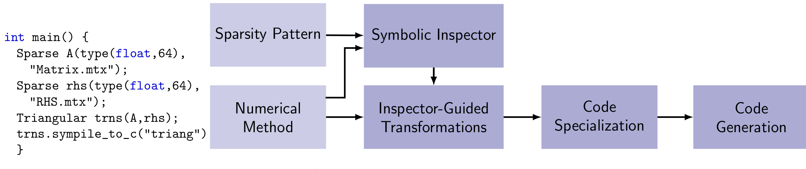

a code generator for transforming sparse matrix codes
Sympiler is a domain-specific code generator that optimizes sparse matrix computations by decoupling the symbolic analysis phase from the numerical manipulation stage in sparse codes. Sympiler then generates specialized code based on the symbolic information. The following figure shows how the input code to Sympiler is transformed internally to an optimized code.
Sympiler can be compiled from source code using README file provided in the Sympiler repository. Since Sympiler is developed based on Halide code thus, the Halide tutorials are helpful to understand the Sympiler internals. The Sympiler internals are also explained in SC17 paper and presentation .
These academic publications explain how symbolic information in sparse methods can guide the code generation phase They also show how decoupling symbolic analysis from numerical manipulation stage simplifies the Sympiler-generated code and empowers Sympiler to select wiser optimization techniques at compile time.
Sympiler: Transforming Sparse Matrix Codes by Decoupling Symbolic Analysis
Kazem Cheshmi,
Shoaib Kamil,
Michelle Mills Strout,
Maryam Mehri Dehnavi
SC 2017. Slides
Decoupling Symbolic from Numeric in Sparse Matrix Computations
Kazem Cheshmi,
Maryam Mehri Dehnavi
First place in 2017 ACM SRC Grand Finals Winners